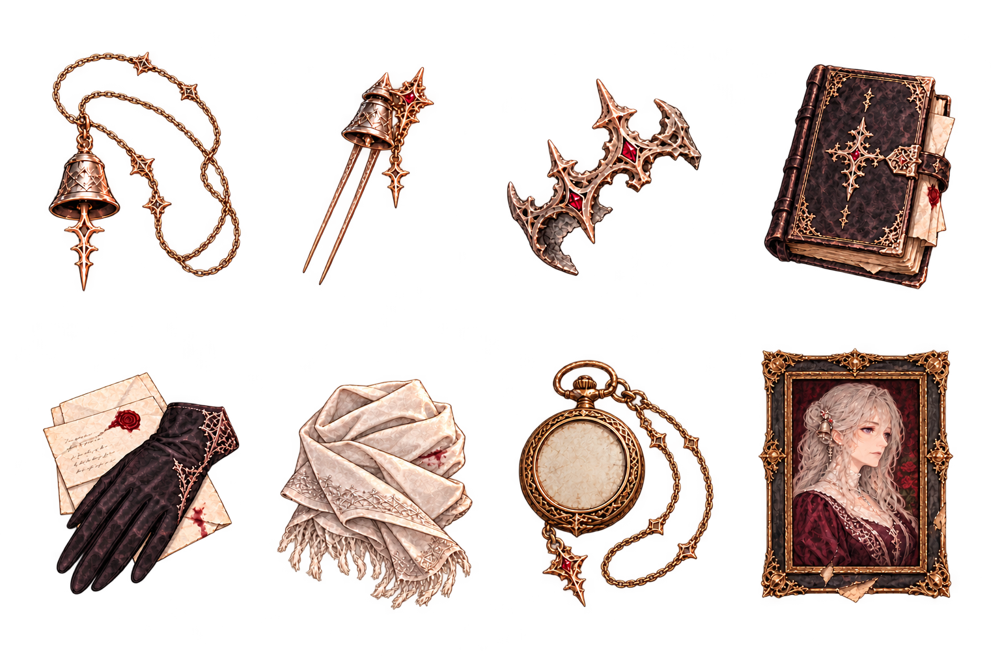
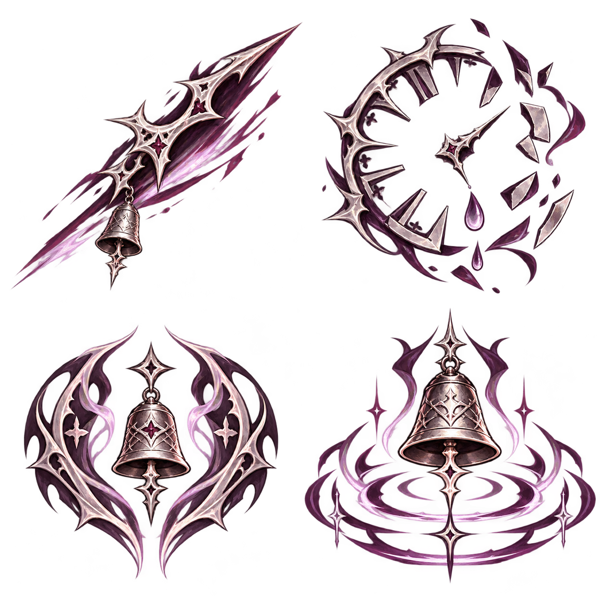
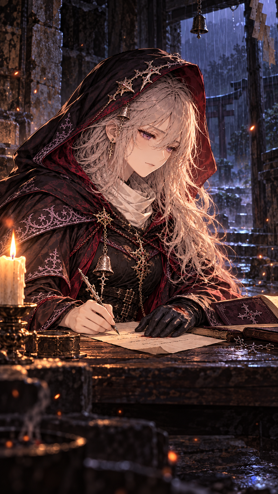
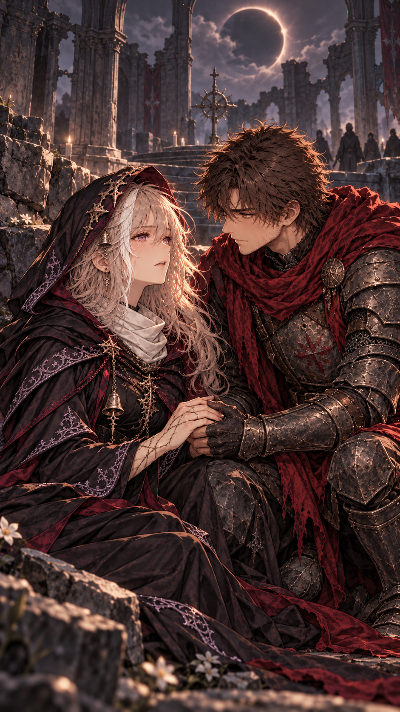
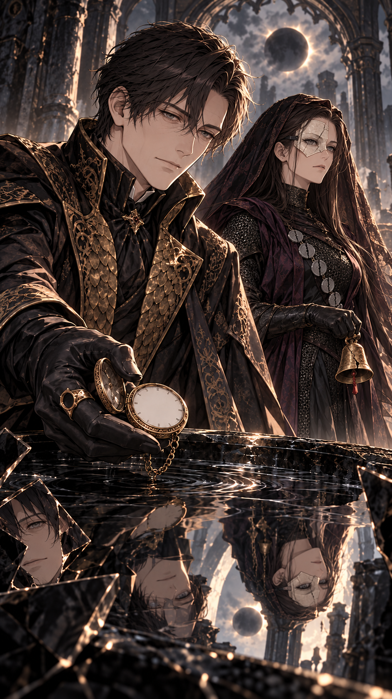

Üretim kaynakları
Teslim ve kalan işler · 68 duygu eşleştirmesi · Hikâye koşulları · Dört skill / altı VFX bileşeni · Godot doğrulaması · Ses aşaması
Props ve skill işaretleri


Sinematik çizimler



Yeni sahne çizimleri adaydır; yeni kanon veya yeni hikâye repliği oluşturmaz. Altyazı/VO, oyun akışı ve süre bağlamalarını Claude yapar.